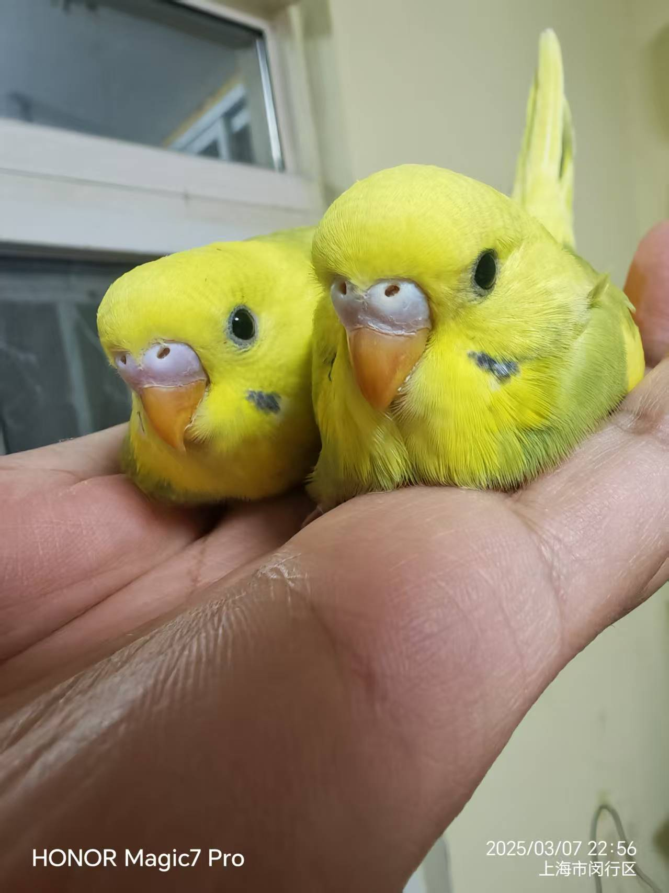

可爱鹦鹉
大洋洲 · 小型鹦鹉 · 澳洲馆展出




基本信息
学名
娇凤.虎皮鹦鹉
分布区域
纽澳鹦鹉族、澳大利亚内陆及周边岛屿
体型大小
10-18厘米（小型）
平均寿命
8-10年
保护级别
无危（LC）
展区位置
澳洲馆 - 热带雨林区
物种简介
为全球最普遍的宠物鸟之一，虎皮鹦鹉野生种群以浅绿色为主，人工培育后衍生出蓝、黄等多种羽色变种。其栖息地主要为澳大利亚的林缘和草地，以植物种子为食，繁殖期集中在南半球的6月至次年1月。 虎皮鹦鹉（学名：Melopsittacus undulatus）是鹦形目鹦鹉科的鸟类，又名娇凤，属小型攀禽品种，原产于澳大利亚的内陆地区，野生的虎皮鹦鹉栖息于林缘、草地等处。结群活动。以植物种子等为食。繁殖期为6-1月。营巢于树洞中。每窝产卵4-8枚。孵化期为18天。性情活泼且易于驯养，在中国是大众最喜欢的宠物鸟之一。
虎皮鹦鹉是全世界最普遍的宠物鸟，品种繁多，顽皮可爱，受到大众广泛地喜爱，全世界的总数量超过5百万只，它们常是许多刚对鹦鹉有兴趣的人买的第一只鹦鹉，也是最常出现于鸟展的种类，自从公元1860年澳洲生物学家——癸格曼德对基因工程的重大发现与突破后，各种虎皮鹦鹉的变种即进入前所未有的多样性，共有上千种的变种，再加上它们非常容易照顾及繁殖，所以才会如此的普遍。
生活习性
- 虎皮鹦鹉体长10-20厘米，翼展平均20厘米。前额、脸部黄色。颊部有紫蓝色斑点。上体密布黄色和黑色相间的细条纹。腰部、下体绿色。喉部有黑色的小斑点。尾羽绿蓝色。虹膜白色。嘴灰色。脚灰蓝色。雄鸟鼻包为淡蓝色，雌鸟为肉色。
- 繁殖期会在树洞中筑巢，雌鸟负责孵化蛋和照顾幼鸟，雄鸟负责觅食
- 通常成对或小群体活动，具有较强的领地意识
- 是群聚性的鸟种，平时大多聚集20只甚至数百只，曾经有聚集过25000只的记录；如果受到惊扰，则整群会飞起，在空中转圈且忽然不定向的飞动，然后降落在安全距离附近的树上；它们是相当合群的鸟种，平时每只鸟在群体中都有自己的位置，并无阶级之分，偶尔会发生争吵；在破晓时分会先前往水源处饮水，然后才前往觅食，到了正午炎热的时候会寻找浓密树荫下休憩，到了下午比较凉爽时再继续觅食，到了黄昏整群就会开始回巢休息过夜；白天喜欢在地面觅食，由于身体的羽色和周围环境融为一体，因此相当难以被察觉；它们生性十分友善并不怕人，可以近距离接近观察；它们大多前往牛羊饮水的水槽、池塘、河流、地面上的水坑处活动，通常整群会一起快速的饮水，以避免被掠食者所捕食；它们平常觅食并没有固定的路线，而是以游牧的方式四处搜寻
相关鹦鹉品种
凤头鹦鹉
澳洲 · 大型
吸蜜鹦鹉
澳洲 · 小型
红绿金刚鹦鹉
南美洲 · 大型
非洲灰鹦鹉
非洲 · 中型
非洲灰鹦鹉
非洲 · 中型
非洲灰鹦鹉
非洲 · 中型